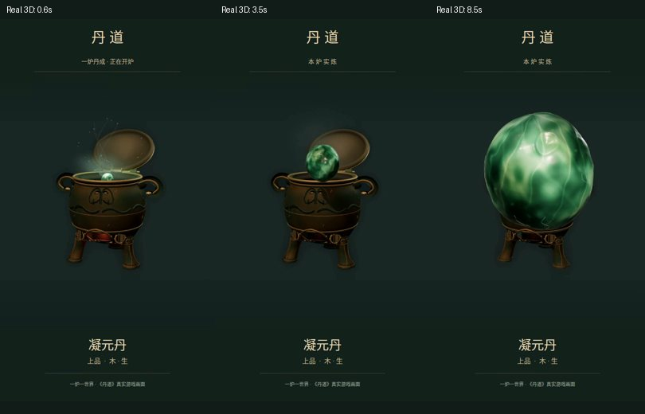

W143 · REAL THREE.JS GAMEPLAY · QA PREVIEW
这一炉，
真的炼成了。
这不是概念宣传片，也不是 AI 重绘出来的丹药。它来自《丹道》真实三维丹炉：投药、控火、开炉，再让同一枚凝元丹现身。视频直接记录已经渲染的 WebGL 帧，后期只做兼容性音视频转码。
10 秒真实开炉录像
225 帧实录帧数，无插帧
540×9609:16 竖屏
开发机：NVIDIA RTX 5070 Ti · 真正录制约 22.5 FPS。还没有稳定达到 24/30 FPS，电影感与手机兼容仍在继续改善。
此页仅是公开 QA 视频演示，并不是 W143 已合并至正式游戏，也不是本人/他人的正式游戏账号分享记录。用户分享仍需要本人主动授权。
同一枚丹药，不同镜头

三幅图来自同一份真实录制的视频，不是分开生成的三张样图。录制不会额外产丹，也不改变玩家的灵石与已获得的丹药身份。
另一种方案：浏览器原生无声 H.264 MP4（实测226帧）
关闭音效后，同一浏览器可直接录制无声 H.264 MP4，下载完整文件后已用 Chrome 播放验证。要获得具有炉火音效的 H.264/AAC MP4，当前由 FFmpeg 转码原生有声 WebM；不能假称已具备所有设备无条件一键导出能力。